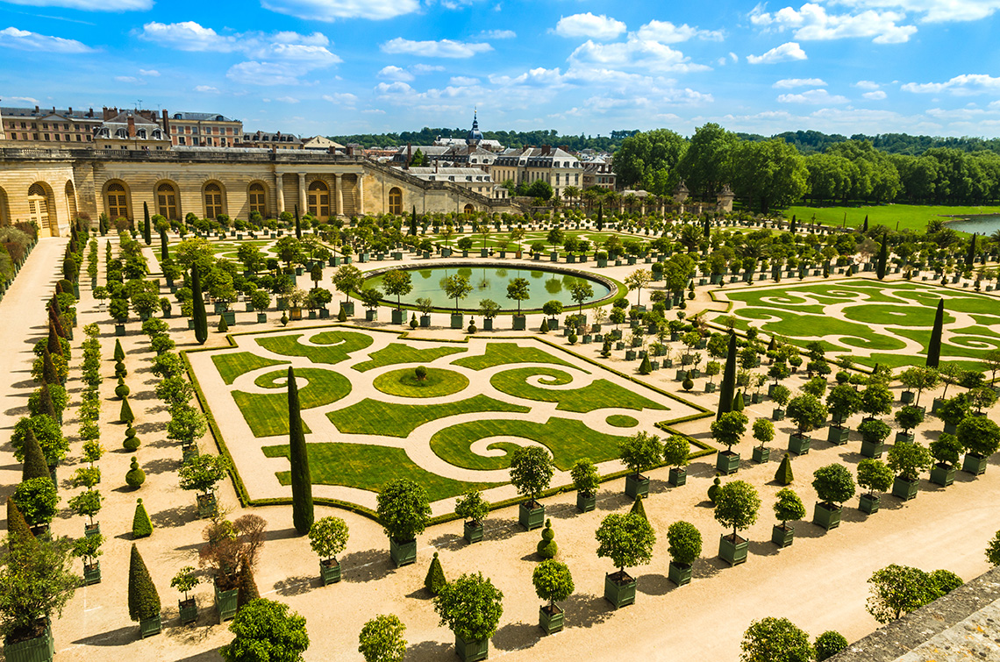
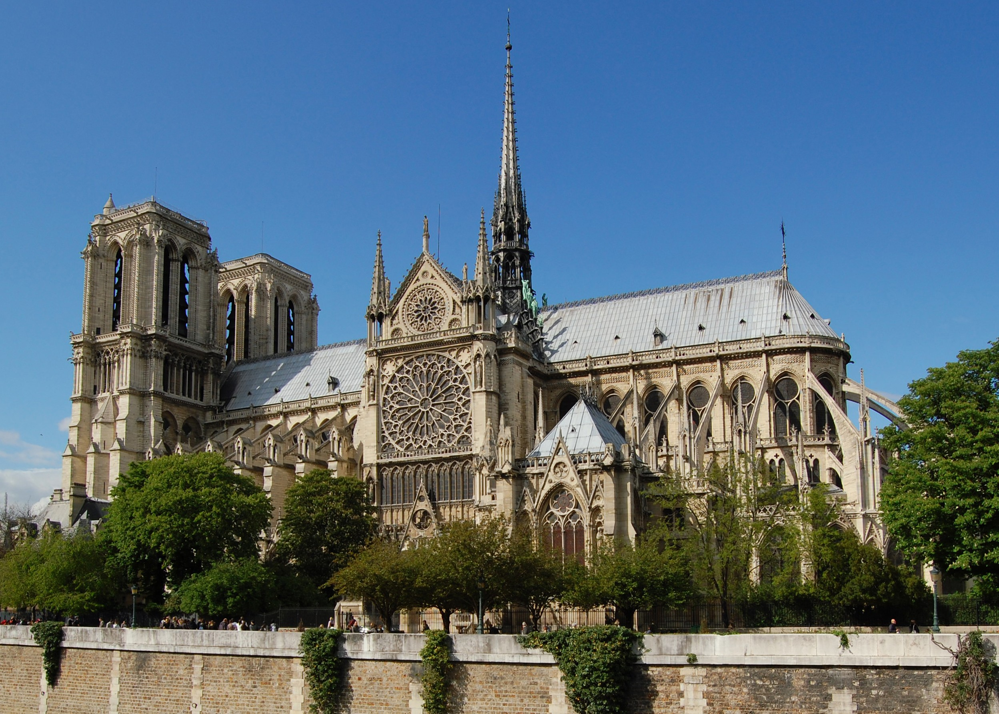

Чтобы сделать свое царствование более эффективным, Луи XIV
решил сделать себе дом рядом со столицей, но не в ней самой.
Поэтому он выбрал Версаль, где его отец Луи XIII построил
охотничий домик. Это маленькое сооружение было превращено
в самый большой замок в мире. Работа над ним началась в1661г
и была завершена более чем через тридцать лет. Огромные ресурсы
были доступны архитекторам, художникам и садовникам, в результате
чего они смогли сделать это место достойным "Короля Солнце."
Король и его двор переехали во дворец в 1672г, когда там еще шли
строительные работы. Шедевр Французского Классицизма, Версаль
послужил моделью для огромного количества королевских резиденций
построенных в Европе во все последующие века. Сегодня первое, что
вы видите, когда подходите к дворцу - это три прекрасных внутренних
двора, которые символически притягивают ваш взгляд к Королевским
Покоям, в то время как восточные фасады обращены к парку и великолепным
садам, простирающимся на 580 метров (635 ярдов).
Построенный из красного песчаника, собор Нотр-Дам прошел через несколько фаз при строительстве. Апсида и трансепт - конца двенадцатого века, неф - из следующего века, вместе с витражами на окнах,  в то время как фасад - из пятнадцатого века, а шпиль, возвышающийся над зданием построен в 1439г. Известные астрономические часы внутри - 1571г. Тем не менее, все это вместе дает чувство единства из-за вертикального ритма, который оживляет фасад, феерического цвета камня и стиля статуй, показывающих и пороки, и добродетели.
|